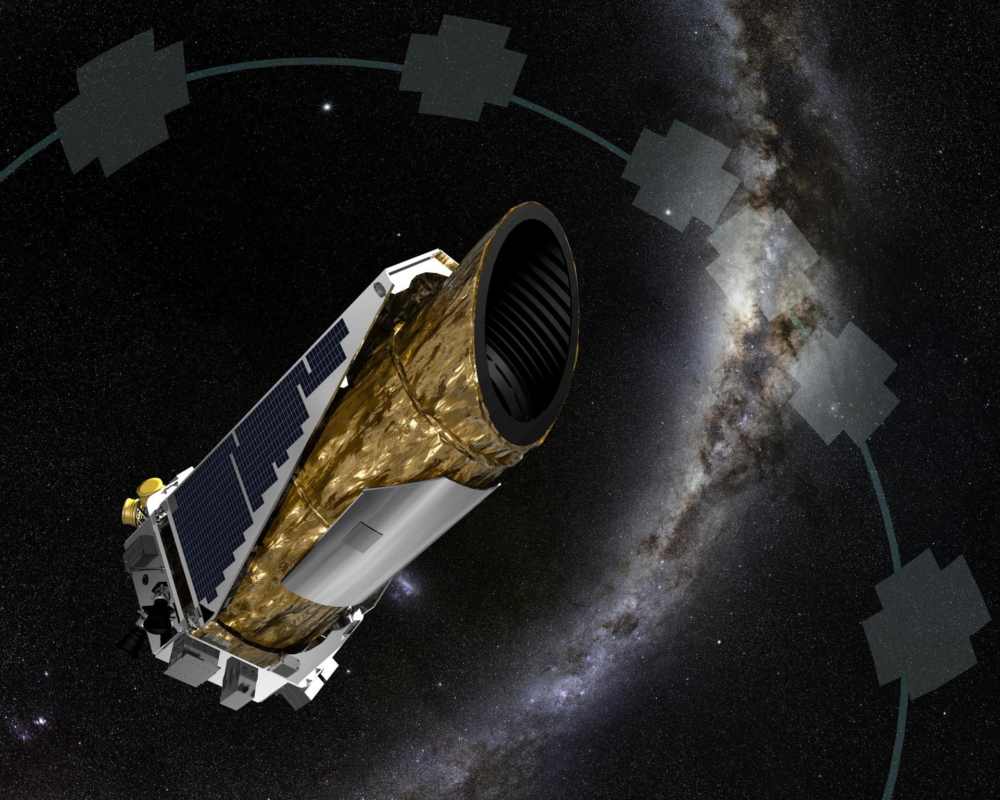
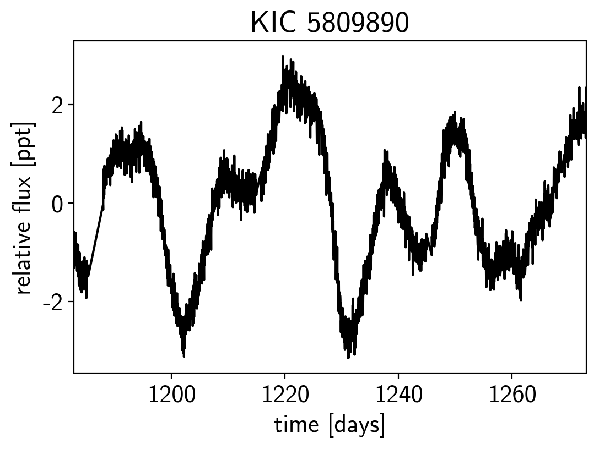

Describe the theoretical foundation of intrinsically interpretable models like sparse regression, gaussian processes, and classification and regression trees, and apply them to realistic case studies with appropriate validation checks.
Reading
Görtler, J., Kehlbeck, R., & Deussen, O. (2019). A visual exploration of Gaussian processes. Distill, 4(4). doi:10.23915/distill.00017
Deisenroth, M., Luo, Y., & van der Wilk, M. (2020). A practical guide to Gaussian processes. https://infallible-thompson-49de36.netlify.app/.
Motivating Case Study
Question: How quickly does a star rotate around its axis? This has to be answered accurately before we can search for exoplanets around the star.
Data: Telescopes make it possible to measure the brightness of a star over time. We can look for periodic patterns in the brightness.

Intuition
Ideally the brighness would be a perfect sine wave. But brightness changes in more complex ways both on the surface of the star and in the space from the star to the telescope.
── Attaching core tidyverse packages ──────────────────────── tidyverse 2.0.0 ──
✔ dplyr 1.1.4 ✔ readr 2.1.5
✔ forcats 1.0.1 ✔ stringr 1.5.2
✔ ggplot2 4.0.0 ✔ tibble 3.3.0
✔ lubridate 1.9.4 ✔ tidyr 1.3.1
✔ purrr 1.1.0
── Conflicts ────────────────────────────────────────── tidyverse_conflicts() ──
✖ dplyr::filter() masks stats::filter()
✖ dplyr::lag() masks stats::lag()
ℹ Use the conflicted package (<http://conflicted.r-lib.org/>) to force all conflicts to become errors
Data
How does flux vary as the star rotates?

Statistical Motivation
Formulation.
Period \(P\) ≈ rotation period of star
Variations related to evolving spots
Goal. Infer \(P\) to understand stellar activity and improve exoplanet detection
Modeling. We need a statistical model of functions that:
Geometrically, predictions at nearby points should be similar.
What does “nearby” mean? In linear regression, \[\begin{align*}
\mathbf{x}^\top \mathbf{x}'
\end{align*}\] measures closeness (show the covariance calculation).
Linear Regression and Similarity
Kernel answer: Define closeness explicitly.
\[\begin{align*}
k(\mathbf{x}, \mathbf{x}') = \text{how much } f\left(\mathbf{x}\right) \text{ and } f\left(\mathbf{x'}\right) \text{should covary}
\end{align*}\]
This can be used to define a prior distribution over functions. \[\mathbf{f} = [f(x_1), \ldots, f(x_N)]^\top \sim \mathcal{N}(\boldsymbol{\mu}, \mathbf{K})\]
where \(\mu_i = m(x_i)\) and \(K_{ij} = k(x_i, x_j)\) WE often set \(m(\mathbf{x}) = 0\).
Function space perspective
Classical statistics Estimate fixed-dimensional parameters \(\theta\) of a function.
GPs Estimate the entire function \(f\).
Observation This seems impossible, since functions are infinite-dimensional. But we only observe \(f\) at finitely many points, \[\begin{align*}
\mathbf{f}_{N} = \left(f\left(x_1\right), \dots, f(x_N)\right)
\end{align*}\] and a GP can give us a prior for any choice of \(x_{1}, \dots, x_{N}\).
This is what it means to define a “distribution over functions.”
Prior Covariance Structure
Covariance matrix \(\mathbf{K}\):
Diagonal: \(K_{ii} = \sigma_f^2\) is the prior variance at each point.
Off-diagonal: \(K_{ij}\) is the covariance between \(f(x_i)\) and \(f(x_j)\)
Kernel encodes our assumptions about function smoothness, periodicity, trends, etc.
Sampling from the Prior
Sampling from the Prior
Choose test locations \(\mathbf{x}_* = [x_1, \ldots, x_N]^\top\)
Each sample is one plausible function from our prior
Different kernels → different classes of functions
Adding Observations
So far we have only described a prior over functions. How does that prior relate to the observed data \(y_{i}\)?
We imagine \[\begin{align*}
y_i = f(x_i) + \epsilon_i, \quad \epsilon_i \sim \mathcal{N}(0, \sigma_n^2)
\end{align*}\] conditional on a draw \(f\) from the GP prior.
This results in the joint distribution, \[\begin{bmatrix} \mathbf{f}_* \\ \mathbf{y} \end{bmatrix} \sim \mathcal{N}\left(\mathbf{0}, \begin{bmatrix} \mathbf{K}_{**} & \mathbf{K}_{*\text{train}} \\ \mathbf{K}_{\text{train}*} & \mathbf{K}_{\text{train}} + \sigma_n^2\mathbf{I} \end{bmatrix}\right)\]
Gaussian Process Posterior
Now we condition on observed \(\mathbf{y}\) to get a posterior for the actual \(f\) that generated the data. The Gaussian conditioning formula gives
\[p(\mathbf{f}_* | \mathbf{y}, \mathbf{X}, \mathbf{x}_*) = \mathcal{N}(\boldsymbol{\mu}_*, \boldsymbol{\Sigma}_*)\] where
Fix a point \(x_{\ast}\) of interest. Before we observe any data \(y_{1}, \dots,
y_{n}\), what would your best guess of \(y_{\ast}\) be? How much uncertainty would you have? How does this differ from your best guess for \(f_{\ast}\)?
Suppose you have now observed data \(y_{1}, \dots, y_{n}\) at \(x_{1}, \dots,
x_{n}\). We again ask you for a guess of \(y_{\ast}\) at \(x_{\ast}\). How has it changed?
[Optional]. The quantity in the previous part has a Gaussian distribution. Can you derive formulas for \(\mu_{*}\) and \(\sigma_{*}^2\)?